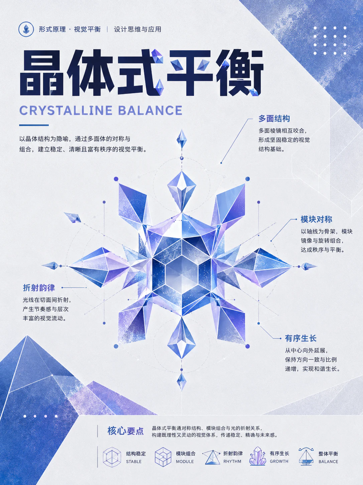

拆开看：何为晶体式平衡
ANATOMY OF CRYSTALLINE BALANCE
原海报说得很凝练：「以晶体结构为隐喻，通过多面体的对称与组合，建立稳定、清晰且富有秩序的视觉平衡。」这句话背后其实藏着四道缺一不可的力学与光学工序。
很多人容易把晶体式平衡和邻近的087 放射平衡原则混为一谈——后者核心在「从一个圆心向四周发散射线」，而晶体式平衡的骨架是多面单元沿晶格轴线彼此咬合，且靠切面倾角折出明暗节奏，让静态秩序透出灵动感；它也不同于单纯追求静止沉稳的089 静态构图，晶体始终带着由内向外生长的方向势能。
晶格秩序：对称群稳住画面
LATTICE & SYMMETRY GROUPS
为什么晶体式平衡偏爱六边形、菱形和正交网格，却很少见随意的五角或七角连续拼贴？答案藏在晶体学的几何边界里。
在平面与三维空间中，只有 2 重（180°）、3 重（120°）、4 重（90°）和 6 重（60°）旋转对称能够无缝周期密铺。这就是为什么 088 原海报中心选用六方晶核、外延用水平与垂直双轴收束——每一条边长、每一个夹角都有彼此呼应的对称配对，眼睛一扫而过就能迅速确认「这组结构不会倒」。
动手在旁边的密铺拼板上点一下任意一块蓝紫晶块，把它向外翻出半步：你会立刻看到红色重心矢向那一侧猛拽。哪怕整体只破缺了一小角，晶体特有的精确感也会瞬间打折。
折射暗室：切面倾角造出韵律
FACET REFRACTION DARKROOM
直接在暗室圆盘上拖动，或拉动旁边的滑杆旋转入射光角与切面倾角。
对称只解决了「稳」，真正让晶体式平衡显得灵动、通透而非僵硬印章的，是切面之间的受光角度差。
同一束冷白光打在同一块多面体上：迎光切面亮成冰白，侧倾切面退成中钴与薰衣草紫，背光切面沉进深靛蓝。只要 12 块切面拉出约 25%–60% 的明度阶梯（经验值），视线就会顺着高光到暗部的跳阶自然流动。
从哪来：雪花、晶格与玻璃屋
ORIGINS & HISTORICAL LINEAGE
开普勒与六角雪花
什么时候用，什么时候别用
WHEN TO USE & WHEN TO AVOID
原海报核心要点写道：「构建既理性又灵动的视觉体系，传递稳定、精确与未来感。」这个判断对科技、精密制造、建筑、珠宝与概念海报非常准确；但正因为多面体与冷色折射天然带着克制和距离感，它并不适合所有需要「松弛温度」或「剧烈时间动势」的主题。
适合用晶体式平衡
- 科技峰会与算力品牌：用多面咬合与清晰轴线一眼传递精准、可靠与前沿感。
- 光学、珠宝与建筑展板：产品本身的切面折光直接延展成版面骨架，零违和感。
- 多维度知识图谱与封面主视觉：以中心核统领 4–6 个平级模块，对称引线清清楚楚。
- 纪念徽章与年度报告扉页：用比例递增的外延晶芽收束年度关键词，仪式感强而不浮夸。
什么时候别硬套
- 需要剧烈速度与冲刺感：对称晶格天生锁住稳定，动感画面请改用090 动态构图。
- 强调破框呼吸与自由风景：严密咬合会显得封闭，辽阔题材宜转向091 开放式构图；若只需要单纯框定边界而非多面折射，可看092 封闭式构图。
- 长篇散文与温情手工绘本：强对称棱角会让阅读节奏变硬，还容易与细密文字抢眼。
- 层级严重不对等的多焦点页面：强行把一大三小塞进对称晶格会硬撑出空壳，不如改用093 单一焦点构图或094 多重焦点构图。
小练习：挑出真晶体平衡
SINGLE-VARIABLE PRACTICE
原海报全览与关键词
ORIGINAL POSTER & KEYWORDS
